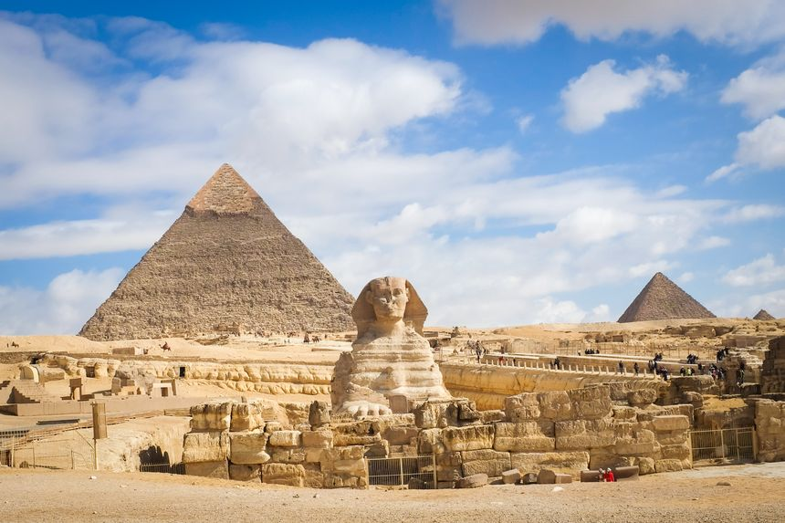
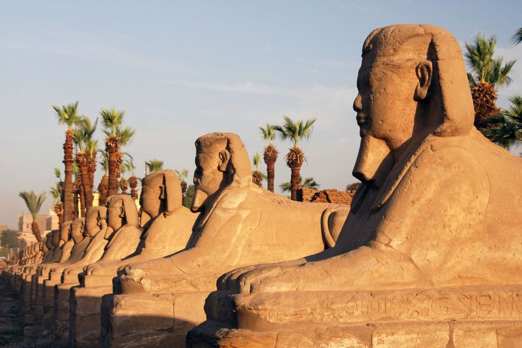
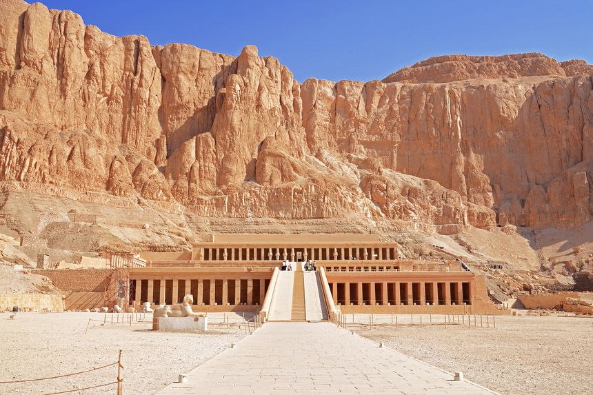

Préambule
Napoléon disait : « Du haut de ces pyramides, 40 siècles nous contemplent ». Et il faut les voir de ses propres yeux pour ressentir le vertige que
cela produit. Difficile de citer un pays plus magique que l’Égypte quand il s’agit de parler de voyage avec un grand V, de patrimoine millénaire,
de paysages à couper le souffle et de richesses culturelles sans pareil !
Forcément, les amoureux d’histoire et d’égyptologie ne pourront être qu’en émoi face aux pyramides de Gizeh, au temple de Karnac et aux statues géantes
d’Abou Simbel. Les plus aventuriers trouveront leur bonheur en s’enfonçant au coeur du désert, entre balades dans les palmeraies d’oasis luxuriantes,
randonnées dans des paysages lunaires et visites de villages traditionnels dans la vallée du Nil. Les amateurs d’expériences humaines succomberont face
à la gentillesse des locaux, rencontrés au détour d’un souk à Louxor, sur un bateau lors d’une croisière sur le Nil ou en appréciant une chicha dans un
café local au Caire. Sans oublier la possibilité de vivre votre voyage en Égypte au rythme de la mer Rouge, avec plongées dans des récifs d’une rare beauté,
détente sur des plages de rêve et nombreuses activités dans des stations balnéaires animées au rendez-vous. La bonne nouvelle ? C’est que tout cela est
accessible à seulement 4 h de vol de France. Qui dit mieux ?
Après plusieurs mois passés dans ce pays exceptionnel, découvrez ma sélection des incontournables à ne pas rater :

Le Caire
Quand on parle du Caire, on pense tout de suite aux grandioses pyramides de Khéops, de Khéphren et de Mikérinos, qui s’élèvent au loin sur le plateau de
Gizeh. Inutile de dire que cette merveille du monde fera partie des points culminants de votre voyage organisé en Égypte. Mais la grande surprise qui vous attend, c’est la richesse que
renferme le Caire, et dont on parle beaucoup moins souvent. Bien évidemment, vous ne pourrez pas passer à côté du musée du Caire, de ses trésors retrouvés dans la tombe de Toutankhamon et
de l’amoncellement inouï d’objets uniques, tout droit récupérés des plus grands tombaux du pays.
Cela dit, ne manquez pas non plus le patrimoine historique de la vieille ville, qui a connu de multiples influences, à commencer par le quartier copte et ses églises aux décorations orthodoxes.
Ni même les magnifiques mosquées des sultans Hassan et Rifay, points de départ d’une magnifique balade dans le vieux Caire islamique.
Perdez-vous entre la sublime citadelle de Saladin et les ruelles tarabiscotées du quartier Fatimides. Reposez-vous à l’ombre des arbres du parc Al-Azhar, avant de rejoindre le souk grouillant de Khan Al Kalili.
Et terminez la journée avec un thé ou une chicha, en vous imprégnant de l’ambiance entêtante de la capitale.
Le conseil de Alexandre : Si vous souhaitez voir un spectacle folklorique de derviches tourneurs, le plus coloré est, sans conteste, celui de la troupe El-Tannoura,
qui se produit trois fois par semaine dans le centre d’art Wekalet El-Ghouri, à deux pas de la mosquée Al-Azhar et du souk. Présentez-vous bien 40 minutes avant le début du spectacle
pour obtenir des places, car il n’est pas possible de réserver à l’avance !
Vous aimerez Le Caire pour :
Art et culture | Musées | Marché | Patrimoine mondial de l'Unesco | Site archéologique

Louxor
Rien que le nom sonne comme une douce promesse de merveilles à découvrir. Et vous ne serez pas déçus ! Louxor, ancienne capitale de l’Égypte connue sous le nom de Thèbes,
abrite certains des plus beaux vestiges de l’Égypte antique. Le coeur de la ville se trouve sur la rive Est du Nil, où vous tomberez nez à nez avec le temple de Louxor et son interminable allée de
Sphinx, magnifique introduction à ce que la ville a de mieux à offrir. Vous pourrez ensuite vous rendre à seulement trois kilomètres au nord de la ville, en calèche ou en petit bateau à moteur
pour découvrir Karnak, l’un des plus beaux temples pharaoniques du pays. Sa salle hypostyle en superbe état ne concentre pas moins de 134 piliers, tous recouverts de hiéroglyphes d’une rare finesse.
Vous pourrez également vous balader dans le vieux souk arabe ou le long de la corniche en centre-ville. Sans oublier le musée de Louxor, beaucoup plus épuré que celui du Caire, mais contenant des pièces absolument uniques !
Le conseil de Alexandre : Quelle que soit la période de l’année, il fait chaud en Égypte, et les temples ne sont que peu ombragés. Essayez donc de partir le plus tôt possible pour les visites, aux alentours
de 7 h du matin. Vous éviterez ainsi les grosses chaleurs, et les foules de touristes qui s’accumulent dès 9 ou 10 h du matin.!
Vous aimerez Louxor pour :
Patrimoine mondial de l'Unesco | Monuments | Site archéologique

La vallée des rois
Rendez-vous sur la rive Ouest de Louxor cette fois-ci, celle qui mène à l’incontournable vallée des rois. Ici, des centaines de tombeaux se cachent dans les enclaves de la montagne.
Vous passerez devant les colosses de Memnon pour une entrée en matière des plus grandioses. Ensuite, à vous de choisir entre la visite des tombeaux de plusieurs Ramsès, Seti, Toutankhamon, ou bien encore
Toutmosis II, pour ne citer qu’eux. Préparez-vous à avoir le souffle coupé en découvrant des tombeaux millénaires, dont les peintures, les hiéroglyphes et la qualité des sculptures semblent dater d’hier.
Dirigez-vous ensuite vers la vallée des reines pour découvrir le temple d’Hatshepsout, entièrement rénové et dont la finesse des fresques est tout bonnement éblouissante. Si le temps vous le permet,
visitez également la vallée des nobles et la vallée des artisans, avec le village de Deir-el-Medinah, où résidaient les artisans chargés de bâtir les tombeaux des pharaons.
Le conseil de Alexandre : Le ticket pour visiter la vallée des rois propose une entrée pour trois tombeaux au choix. Certains tombeaux, comme celui de Seti ou de Toutankhamon
par exemple, sont en extra. Je vous conseille de visiter en extra le tombeau commun de Ramsès V et VI, probablement l’un des mieux conservés !
Vous aimerez Le Caire pour :
Art et culture | Musées | Marché | Patrimoine mondial de l'Unesco | Site archéologique